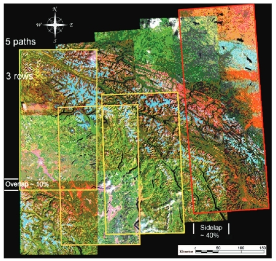
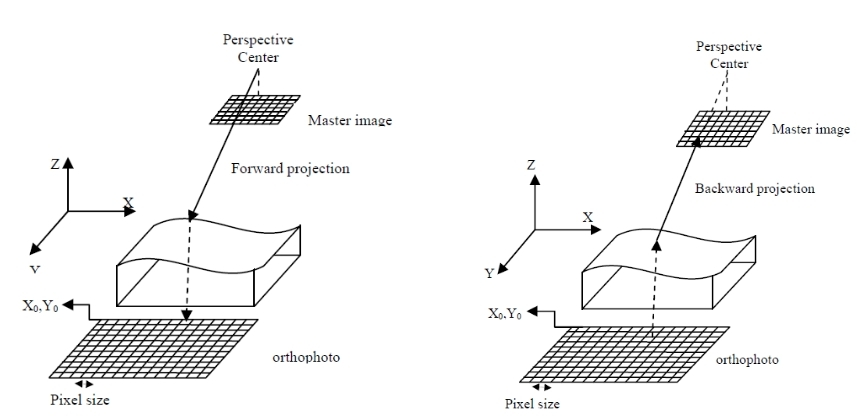

Introduction
This lab consists of an exercise designed to explore the geometric correction of a multi-channel image via the process of image rectification. The goal of this lab is to investigate different polynomial methods for establishing the relationship between the image coordinate system and the ground coordinate system. As studied in photogrammetry, when imaging geometry is known, it is possible to impose conditions of collinearity to establish such a relationship. When imaging geometry is unknown, a less precise means of establishing this relationships is to model it with a polynomial equation.
The polynomial model between image and ground coordinates can be established in one of two different ways: back projection and forward projection. Forwards projection solves for the coefficients of a polynomial model that transforms image coordinates into map coordinates. Backwards projection solves for the coefficients of a polynomial model that transforms ground coordinates into image coordinates. In this lab we will implement the backwards projection to investigate two elements of the polynomial image rectification process: the use of different order polynomials and the use of different interpolation methods for sampling digital numbers from the image given the map coordinates.
The process of image rectification can be summarized in the following steps:
- Select the polynomial model to estimate
- Establish a sufficient number of ground control points that exceeds the minimum number of GCP necessary to uniquely estimate all polynomial coefficients
- Estimate the coefficients of the polynomial transformation using the method of least squares
- Use the estimated polynomial model to sample digital numbers from the image given the ground coordinates of each pixel
- Generally, the polynomial model will not map exactly to the center of a pixel. As such, interpolation is performed in order to estimate the digital number of the ground coordinate pixel
Polynomial Models
We can express the back projection model in terms of the image coordinates and ground coordinates of the GCPs.
$$X,Y = Image\,Coordinates$$ $$x,y = Ground\,Coordinates$$ $$A_{i+j},B_{i+j} = Coefficients$$ $$X = \sum_{i=0}^{m}\sum_{j=0}^{n - i}A_{i+j}x^{i}y^{j}$$ $$Y = \sum_{i=0}^{m}\sum_{j=0}^{n - i}B_{i+j}x^{i}y^{j}$$The first order polynomial allows for translation along both axes, rotation, scaling and obliquity. The second order polynomial additionally allows for torsion and convexity transformation of the image. Higher order polynomials perform transformations that cannot be described in any physical sense. It is important to recognize that these polynomial functions do not reflect the imaging geometry, and hence cannot account for relief distortion.
Ground Control Points
Ground Control Points should be collected in a planimetric system. It is possible to use software such as ArcMap or Google Earth Pro to perform such sampling. Google Earth Pro can be downloaded for free here.
Least-Squares Coefficient Estimation
The Unweighted Parametric Least-Squares Adjustment can be used to estimate the polynomial coefficients. In this case, the coefficients are a linear function of the ground coordinates, and the image coordinates constitute the observations, allowing the formation of observation equations. This can be expressed as: $$A\hat{x} - l = \hat{v}$$ $$A = Design\,Matrix$$ $$\hat{x} = Least\,Squares\,Estimator\,of\,the\,Parameters\,x$$ $$l = Vector\,of\,image\,coordinate\,observations$$ $$\hat{v} = Vector\,of\,Residuals$$ The Least-Squares Estimator $\hat{x}$ of $x$ is computed as $$\hat{x} = (A^{T}A)^{-1}A^{T}l$$ $$(A^{T}A)^{-1} = Normal\,Equations$$ One issue that arises is the numerical stability of the normal equations due to the large values of the ground coordinate components. This can result in an ill-conditioned system of normal equations. Numerous techniques exist to circumvent this issue, the simplest of which is to translate the ground coordinates to the centriod of the ground control points, estimate the polynomial coefficients, compute the resampled map, and then translate the coordinates of the final map's pixels back.
Resample
Once the polynomial coefficients have been estimated, the next step involves sampling the image by backprojecting each pixel in the ground coordinate system to its associated coordinates in the image system. In this case a blank raster containing no data values is allocated to store the pixel values for each location. Since the backprojected ground coordinate will not coincide exactly with the center of the image pixel coordinates, interpolation is required to estimate the value of the new raster's pixel.
Interpolate
In this lab, the pixel values will be interpolated using one of two different methods: nearest neighbour interpolation and bilinear interpolation.
Nearest neighbour interpolation involves assigning the digital number of the closest pixel that the backprojection function maps to. Bilinear interpolation can be computed as follows for a point within the neighbourhood of 4 pixels. First we perform linear interpolation in the x direction: $$DN(x,y_{1}) = \frac{x_{2}-x}{x_{2}-x_{1}}DN(x_{1},y_{1}) + \frac{x-x_{1}}{x_{2}-x_{1}}DN(x_{2},y_{1})$$ $$DN(x,y_{2}) = \frac{x_{2}-x}{x_{2}-x_{1}}DN(x_{1},y_{2}) + \frac{x-x_{1}}{x_{2}-x_{1}}DN(x_{2},y_{2})$$ Second, we perform linear interpolation in the y direction: $$DN(x,y) = \frac{y_{2}-y}{y_{2}-y_{1}}DN(x,y_{1}) + \frac{y-y_{1}}{y_{2}-y_{1}}DN(x,y_{2})$$